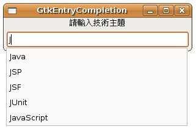

先前看過 GtkEntry 的範例，主要是作為使用者輸入文字之用，您可以搭配GtkEntryCompletion來讓GtkEntry擁有自動完成功能，這需要使用到GtkListStore與GtkTreeIter，這兩個類別在 GtkComboBox 與 GtkListStore 曾經介紹過，只要您會使用 GtkEntry、GtkListStore與GtkTreeIter，製作自動完成就不是什麼困難的事。
以下直接使用實例來示範：
- gtk_entrycompletion_demo.c
#include<gtk/gtk.h>
int main(int argc, char *argv[]) {
GtkWidget *window;
GtkWidget *vbox;
GtkWidget *label;
GtkWidget *entry;
GtkEntryCompletion *completion;
GtkListStore *store;
GtkTreeIter iter;
int i;
// 作為自動完成時的項目提示
gchar *topics[] = {
"C", "C++", "Java", "JSP", "JSF", "JUnit", "JavaScript" };
gtk_init (&argc, &argv);
window = gtk_window_new(GTK_WINDOW_TOPLEVEL);
gtk_window_set_title(GTK_WINDOW(window), "GtkEntryCompletion");
gtk_window_set_default_size(GTK_WINDOW(window), 300, 50);
// 使用GtkListStore儲存項目提示
store = gtk_list_store_new(1, G_TYPE_STRING);
for(i = 0; i < 7; i++) {
gtk_list_store_append(store, &iter);
gtk_list_store_set(store, &iter, 0, topics[i], -1);
}
// 將GtkListStore設定給GtkEntryCompletion
completion = gtk_entry_completion_new();
gtk_entry_completion_set_model(completion, GTK_TREE_MODEL(store));
gtk_entry_completion_set_text_column (completion, 0);
label = gtk_label_new("請輸入技術主題");
// 建立GtkEntry
entry = gtk_entry_new();
// 設定GtkEntryCompletion
gtk_entry_set_completion(GTK_ENTRY(entry), completion);
vbox = gtk_vbox_new(FALSE, 5);
gtk_box_pack_start(GTK_BOX (vbox), label, FALSE, FALSE, 0);
gtk_box_pack_start(GTK_BOX (vbox), entry, FALSE, FALSE, 0);
gtk_container_add(GTK_CONTAINER (window), vbox);
g_signal_connect(GTK_OBJECT(window), "destroy",
G_CALLBACK(gtk_main_quit), NULL);
gtk_widget_show_all (window);
gtk_main();
return 0;
}一個執行的結果如下所示：
